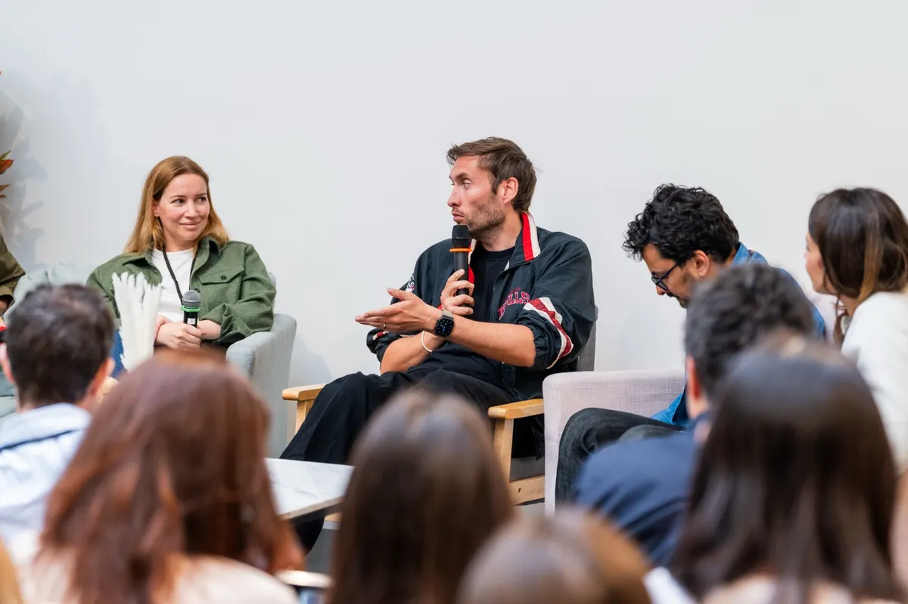

1. C'est quoi ces fichiers ?
Le cœur du système, ce sont des fichiers .md (Markdown — du texte brut formaté) que tu colles dans les « Project Instructions » d'un projet Claude. Dès que tu fais ça, chaque conversation dans ce projet repart avec ce contexte.
Claude connaît ton style, ton secteur, tes règles du jeu. Tu n'as plus à réexpliquer qui tu es à chaque fois. C'est la différence entre un assistant générique et un assistant qui te connaît.
2. Le principe : le Compound Engineering
L'idée vient d'un concept qu'on appelle le Compound Engineering : chaque fois que Claude fait un truc qui t'agace ou se plante sur ton style, tu ajoutes une règle. Le fichier s'améliore avec l'usage, et tous tes échanges futurs en bénéficient.
C'est ça le levier réel : tu ne « prompt » pas mieux ponctuellement, tu construis un actif qui compose dans le temps. Au bout de quelques semaines, Claude produit du premier coup ce qui te prenait trois allers-retours.
En une phrase
Un bon setup Claude, ce n'est pas un meilleur prompt — c'est un système de fichiers qui apprend tes préférences et les applique automatiquement à chaque conversation.
3. Comment ça marche concrètement
Il y a un fichier principal — CLAUDE.md — qui définit l'essentiel : ton ton, ton format de réponse, tes règles de comportement, ton contexte pro. C'est la base qui tourne en permanence.
Ensuite il y a des fichiers d'extension, chargés seulement quand c'est utile :
CLAUDE-strat.md— pour les sujets business / com / marketing.CLAUDE-dev.md— pour tout ce qui touche au code.
Le CLAUDE.md principal sait quand appeler l'un ou l'autre — tu ne charges pas tout à chaque fois. C'est ce qui garde le contexte léger et pertinent.
J'ai aussi un fichier dédié à l'histoire et à l'ADN de la marque. C'est ce que Claude charge quand il faut rédiger, pitcher, communiquer — il connaît le positionnement, le ton, ce qu'on dit et ce qu'on ne dit pas. C'est 1 h à écrire avec Claude et ça change radicalement la qualité de tout ce qu'il produit sur ta marque.

4. Claude Chat vs Claude Code
Ce système de fichiers, c'est pour Claude Chat — l'interface web sur claude.ai. Tu crées un Project, tu colles tes instructions, c'est parti.
Claude Code, c'est autre chose : un outil en ligne de commande qui tourne dans ton terminal, directement dans ton repo. Il voit tes fichiers, il comprend ta codebase, il peut exécuter du code. Si tu fais du dev, c'est un niveau au-dessus. Le principe de config est le même, mais l'usage est 100 % technique.
5. Par où commencer
Regarde des fichiers existants pour t'inspirer, mais ne les copie pas tels quels — ils sont calés sur un contexte qui n'est pas le tien. Ma recommandation :
- Crée un Project sur claude.ai.
- Demande à Claude de construire ton
CLAUDE.mden lui collant le prompt ci-dessous. - Une fois le socle solide, attaque le fichier d'ADN de marque — histoire, positionnement, ton. C'est là que ça devient vraiment puissant pour la com et le contenu.
Le prompt à copier-coller pour générer ton fichier :
C'est tout ce qu'il faut pour démarrer. Le reste se construit à l'usage : chaque friction devient une règle, et ton système se bonifie tout seul.